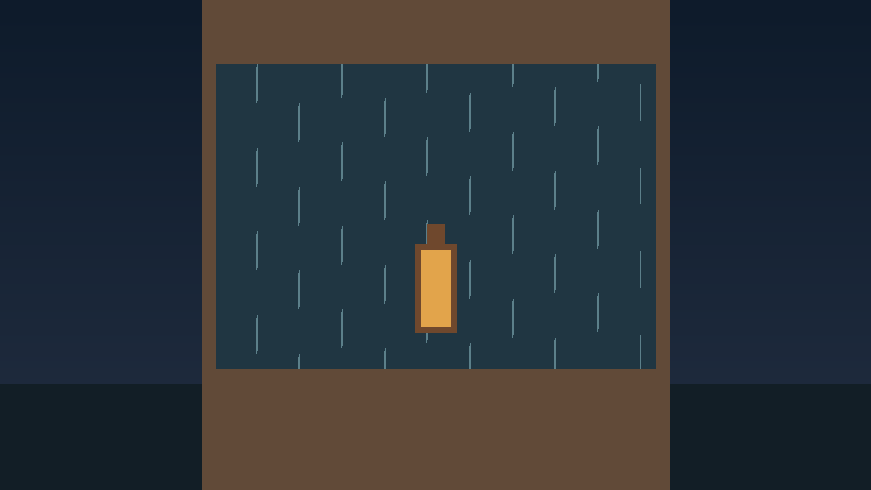

From a script
to a scene.
narrative-media-pipeline explores a code-driven workflow for turning structured narration into audio, subtitles and a simple video.
Explore the repository ↗
Measured from the voice up.
Script
Read a small structured story and validate its lines.
Narration
Generate speech and optionally convert its timbre with a separately installed RVC model.
Timeline
Measure audio clips and produce aligned, editable SRT subtitles.
Deliver
Assemble narration, encode a still-image video, check files and create an archive.
A focused starting point.
The current sample uses an original two-line story. Video is a static illustration with narration; subtitles are supplied separately. The original adaptation's text and media are not part of the public repository.
Built with Python, Edge TTS and FFmpeg. RVC can be connected as an optional external module.
What we are building.
- Animated scenes and configurable visual rendering
- Audio/video synchronization and stronger automated quality checks
- Reliable retries, loudness control and packaging
- Broader tests, cross-platform CI and reviewed pull requests
These are planned tasks, not claims about current features.